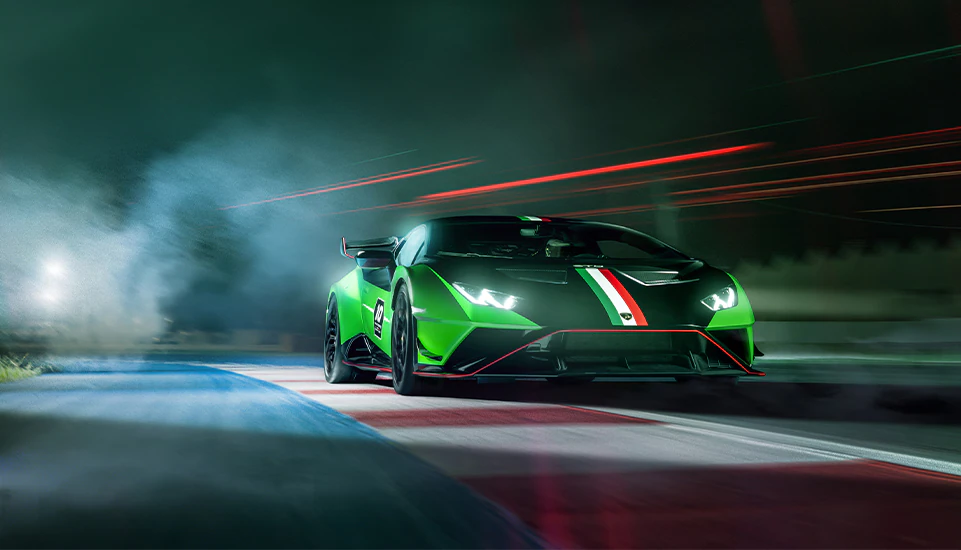
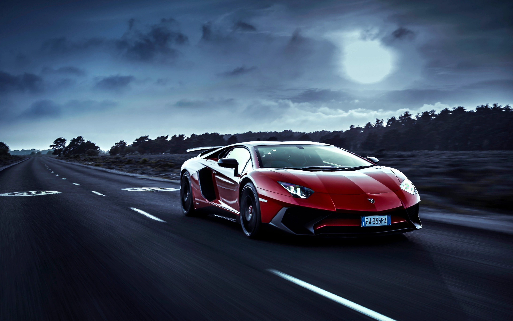

Lamborghini
El impulso para crear automóviles de lujo surgió cuando Ferruccio
Lamborghini, un apasionado de los deportivos, decidió que podía
hacerlo mejor que las marcas existentes en ese momento,
especialmente Ferrari. Después de tener algunas disputas con Enzo
Ferrari, quien supuestamente desestimó las quejas de Lamborghini
sobre los problemas de su Ferrari, Ferruccio decidió fundar su
propia empresa de automóviles deportivos.
El primer automóvil producido por Lamborghini fue el 350 GT,
presentado en el Salón del Automóvil de Turín en 1963. Este
automóvil impresionó a la comunidad automovilística con su potencia,
elegancia y estilo italiano distintivo. Posteriormente, Lamborghini
lanzó modelos icónicos como el Miura, el primer automóvil de
producción con motor central trasero, que revolucionó el diseño de
los superdeportivos.
Otro hito importante en la historia de Lamborghini fue el
lanzamiento del Countach en la década de 1970, que estableció un
nuevo estándar en términos de diseño y desempeño automotriz. A lo
largo de los años, Lamborghini ha continuado innovando y produciendo
modelos legendarios como el Diablo, el Murciélago, el Gallardo y el
Aventador, cada uno de los cuales ha dejado una marca indeleble en
la historia de los automóviles deportivos de lujo.
Además de su rendimiento excepcional y diseño impresionante, los
automóviles Lamborghini también se han convertido en símbolos de
estatus y lujo, atrayendo a clientes de élite de todo el mundo. La
marca ha sido propiedad de varias compañías a lo largo de los años,
incluidas Chrysler, Volkswagen y, actualmente, está bajo la
dirección de Audi, una subsidiaria del Grupo Volkswagen.
Marcas de automóviles con las que Lamborghini ha competido
- Ferrari
- Porsche
- Aston Martin
- McLaren
- Bugatti
- Mercedes-AMG
- Audi (incluyendo la submarca Audi Sport)
- Bentley
- Rolls-Royce
- BMW (especialmente con su división BMW M)
| Modelo | Año | Motor | Potencia | Velocidad Máxima | Aceleración 0-100 km/h |
|---|---|---|---|---|---|
| Lamborghini Huracán Performante | 2017 | V10 | 640 CV | 325 km/h | 2.9 segundos |
| Lamborghini Aventador SVJ | 2018 | V12 | 770 CV | 350 km/h | 2.8 segundos |
| Lamborghini Urus | 2018 | V8 twin-turbo | 650 CV | 305 km/h | 3.6 segundos |
| Lamborghini Huracán Evo | 2019 | V10 | 640 CV | 325 km/h | 2.9 segundos |
| Lamborghini Sian FKP 37 | 2020 | V12 + motor eléctrico | 819 CV | 350 km/h | 2.8 segundos |
-

- 
- 
Para mas informacion visita esta pagina